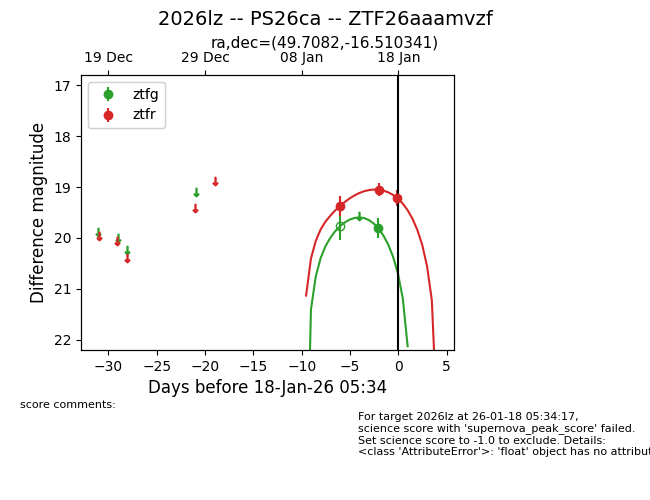
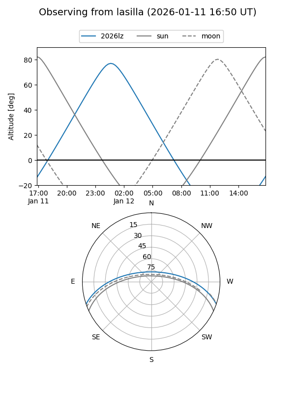
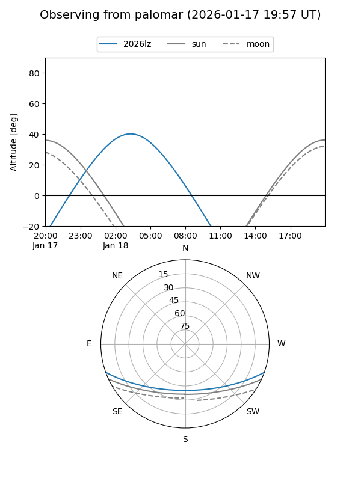
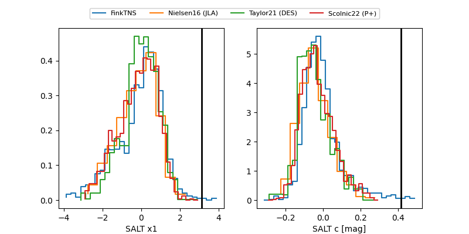

2026lz
Target 2026lz at 2026-01-12 05:24
Aliases and brokers:
FINK: link
Lasair: link
ALeRCE: link
TNS: link
YSE: link
alt names
ZTF26aaamvzf (ztf,fink_ztf)
2026lz (tns,yse)
PS26ca (panstarrs)
Coordinates:
equatorial (ra, dec) = 49.7082,-16.51034
equatorial (HMS+DMS) = 03:18:49.97,-16:30:37.23
galactic (l, b) = (203.3640,-54.33190)
Flags:
Photometry:
last ztfr=19.37
1 ztfr detections
Lightcurve

Visibility


Additional plots
